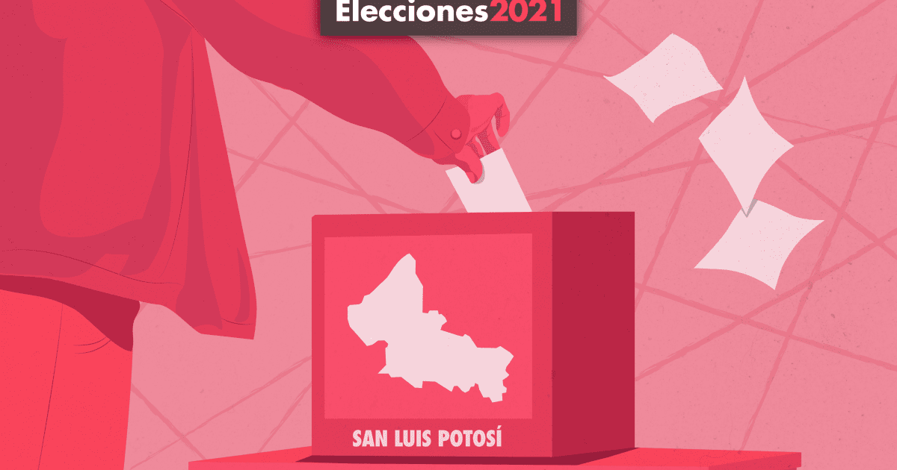

- Gobernador de San Luis Potosí: Titular del Poder Ejecutivo del estado, electo para un periodo de seis años, sin derecho a reelección
- 27 diputados estatales: 15 diputados electos por mayoría relativa y 12 designados mediante representación proporcional para integrar la LXIII Legislatura
- 58 ayuntamientos: Compuestos por un presidente municipal, un síndico y sus regidores. Electos para un periodo de tres años
La campaña electoral para la gubernatura inicia el 5 de marzo de 2021, mientras que las campañas para las diputaciones y alcaldías inician el 4 de abril. El periodo de campañas concluye el 2 de junio. La votación está programada para celebrarse el 6 de junio de 2021, de las 8 de la mañana a las 6 de la tarde, en simultáneo con las elecciones federales. Se estima que el computo final de resultados se publique el 21 de junio
En las elecciones estatales tienen derecho a participar doce partidos políticos. Diez son partidos políticos con registro nacional: Partido Acción Nacional (PAN), Partido Revolucionario Institucional (PRI), Partido de la Revolución Democrática (PRD), Partido del Trabajo (PT)

Ricardo Gallardo candidato de la alianza PT-PVEM tomó ventaja en la elección de Gobernador de San Luis Potosí, al registrar una preferencia de entre 35.7 por ciento (rango mínimo) y 38.2 por ciento (rango máximo), informó El Consejo Estatal Electoral y de Participación Ciudadana de San Luis Potosí (CEEPAC) a través del conteo rápido